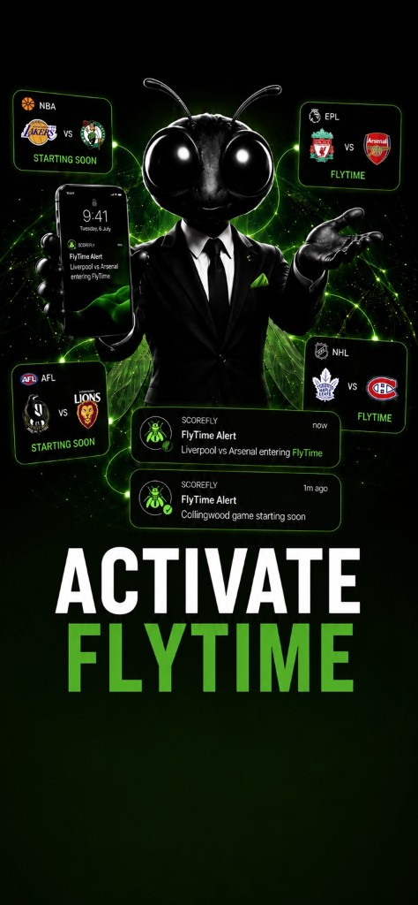

ScoreFly is built upright. Fly Mode is the only sideways view.
Fly Mode Brightness
FLYTIME
Meet FlyTime
When a game gets tight in the final minutes, it hits FlyTime: the part actually worth watching. ScoreFly tells you the moment it happens, across every sport you follow.
Choose a team you care about
Search for a team, club, franchise, or national side you already follow.
🔍
or
Global Starter Pack
Recommended teams

Live Now
My Teams
All
Coming Up
Results
My Teams
All
No results for your teams yet
🔍
My Teams
No teams selected yet
🔔Tap the bell to manage alerts for a team
FlyTime ALL
🔥
Never miss a close finish
Get notified whenever a game anywhere enters FlyTime.
FlyTime LabDEBUG
Suggested for you
Score colours
Neutralsteady or even
Warming upbuilding momentum
On a runscoring streak
On firedominant run
Gone coldopponent has taken over
Comebackclawing back a deficit
Fly Timeclose and in the final stretch
A red match clock means the game has gone to overtime.